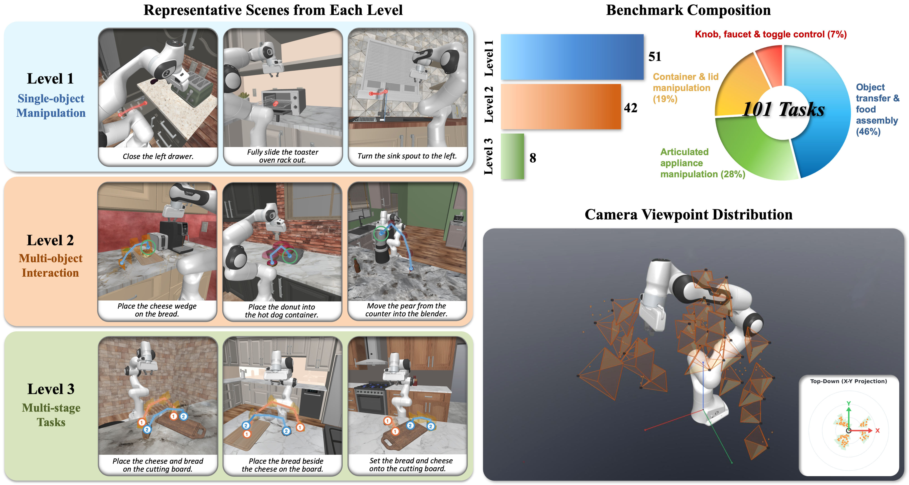
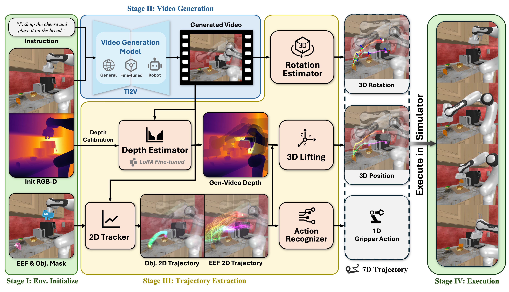

01 / The question
A beautiful video can still describe an impossible action.
Standard video benchmarks reward visual fidelity, temporal consistency, and prompt alignment. Dream.exe adds a grounded test: extract the motion, give it to a robot controller, and measure task success in physics.
Every model starts from the same scene image and natural-language instruction. Every generated video passes through the same evaluation stack.
02 / Benchmark suite
From atomic motions to long-horizon plans.
Built on manually curated RoboCasa365 episodes, the suite fixes the scene state, camera, input image, prompt, and reference rollout for comparable evaluation.

Atomic manipulation
A single object and one continuous primitive: pick, place, press, open, or rotate.
Multi-object interaction
Coupled object states test spatial relationships and ordered manipulation events.
Multi-stage tasks
Longer sequences test physical coherence across distinct sub-goals and transitions.
03 / Video-to-trajectory
Pixels in.
Robot actions out.
The pipeline recovers the motion implicit in a generated video, lifts it into a world-frame trajectory, assembles a 7D action stream, and closes the loop in simulation.

- 01
Locate & track
Initialize end-effector and object regions, then track their pixels through the video with CoTracker.
- 02
Lift into 3D
Estimate depth with the adapted DVD model, calibrate metric scale, and lift tracked points using known cameras.
- 03
Recover actions
Calibrate the tool center, estimate orientation, and infer grasp or release timing from relative motion.
- 04
Execute & score
Run the 7D action stream with closed-loop control in MuJoCo and measure physical task completion.
04 / Selected results
Dream.exe execution leaderboard.
Task progress and sub-goal completion after the generated motion is converted to a trajectory and executed in simulation. Switch between the paper's overall, standard-instruction, and enhanced-instruction results.
Task-level execution · selected models
Progress across the full benchmark
SR-P task progress
Rel release
Place placement
Core core sub-goals
Overall averages the standard and enhanced instruction settings reported in the main paper. Bars share a 0–1 scale; higher is better.
Full execution tables and metric definitions ↗05 / Use Dream.exe
Reproduce the benchmark—or test your own video generator.
01
Code & docs
Installation, quickstart, benchmark runs, custom models, and evaluation.
GitHub ↗ 02101-task benchmark
Fixed initial states, prompts, cameras, ground-truth videos, and references.
Hugging Face ↗ 03DVD depth models
LoRA-adapted video depth checkpoints for the Dream.exe extraction pipeline.
Hugging Face ↗ 04Paper discussion
Read the paper, browse community notes, and follow updates.
Daily Paper ↗Citation
Build on Dream.exe.
@article{zhao2026dreamexe,
title = {Dream.exe: Can Video Generation Models Dream Executable Robot Manipulation?},
author = {Zhao, Rui and Yang, Kaiming and Zhu, Jifeng and Chen, Siyang and Wang, Ziqi and Wu, Weijia and Lin, Kevin Qinghong and Wang, Heng and Shou, Mike Zheng},
journal = {arXiv preprint arXiv:2606.04811},
year = {2026}
}